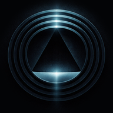
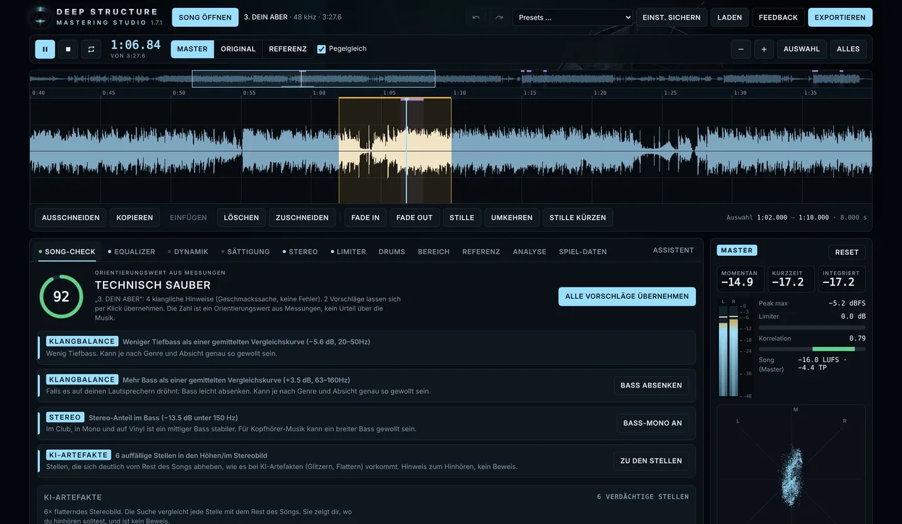
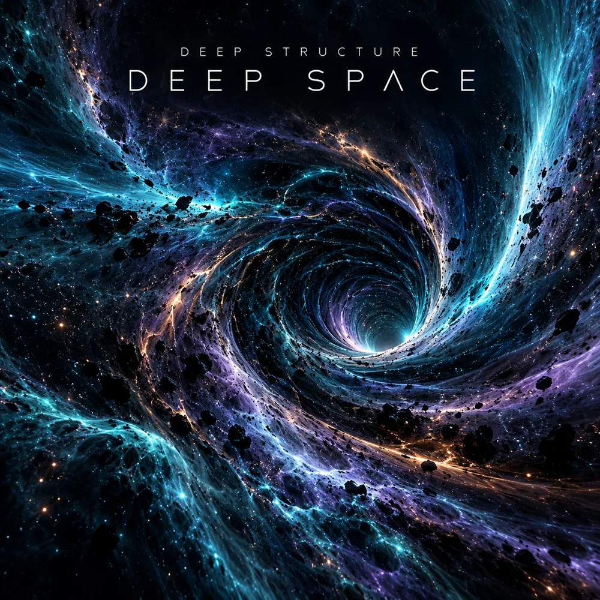

Ein Mastering-Studio, das im Browser auf deinem eigenen Gerät läuft: Es prüft deinen Song, repariert typische Schwächen von KI-Musik und bringt ihn mit einer vollständigen Mastering-Kette auf Veröffentlichungsniveau. Deine Audiodateien verlassen dabei dein Gerät nicht.

Gemastert mit dem Deep Structure Mastering Studio. Zum Anhören einfach auf Abspielen klicken.
Der Master ist bewusst lauter als das Original (etwa −11 statt −15 LUFS). Lauter klingt zunächst oft „besser“; für einen fairen Klangvergleich die Lautstärke beim Umschalten angleichen.

Vier Tracks, rund 20 Minuten, gemastert mit dem Studio – bald als Schallplatte. Hier kannst du schon reinhören.
Hörproben als MP3 (320 kbit/s). Die Vinyl-Ausgabe wird angekündigt, sobald sie bestellbar ist – wer sich unten für Updates einträgt, erfährt es zuerst.
Das Studio ist noch in Entwicklung und wird derzeit von wenigen Testerinnen und Testern erprobt. Du kannst dich per E-Mail eintragen – für Neuigkeiten oder direkt als Beta-Tester.
Du bekommst eine kurze Nachricht, wenn es Neues gibt: neue Funktionen, Beta-Runden und den Start der öffentlichen Version.
Updates anfordernDu möchtest das Studio vorab ausprobieren und Rückmeldung geben? Schreib kurz, womit du Musik machst. Freigegebene Tester melden sich mit ihrer E-Mail-Adresse und einem Einmalcode an.
Als Beta-Tester bewerbenBeide Knöpfe öffnen dein E-Mail-Programm mit einer vorbereiteten Nachricht; gesendet wird erst, wenn du selbst auf „Senden“ klickst. Es gibt keinen Newsletter-Dienst und keine Weitergabe: Ich schreibe dir persönlich. Abmelden geht jederzeit mit einer kurzen Antwort. Einzelheiten: Datenschutz.
Misst Lautheit (LUFS), True Peak, Dynamik, Klangbalance und Stereobild und zeigt, wo dein Track schwächelt, mit Vorschlägen per Klick.
Findet Glitzern, Flattern, Knackser, stehende Störtöne und Rauschteppiche, typisch für KI-generierte Musik, und glättet sie gezielt.
Entzischer und Rauschteppich-Entfernung zwischen Gesang und Beat, nur in der Mitte, sehr zurückhaltend einstellbar.
Glättet sandige und metallische Drums, ergänzt Ausklang und Punch und unterlegt Kick und Snare auf Wunsch mit sauberen Klängen.
8-Band-Equalizer mit Kerbfiltern, 3-Band-Kompressor, Sättigung, Stereobreite mit Bass-Mono und True-Peak-Limiter.
Pegelgleicher A/B-Vergleich mit Original und Referenz-Track.
Mehrere Songs als Album: Lautheit ausbalancieren, Versionen verwalten, eigene Einstellungen auf das ganze Album übertragen.
WAV 16/24/32 Bit, MP3 und OGG, mit Nachmessung der fertigen Datei.
Regler, Fader, Jogwheel und Pads eines DJ- oder MIDI-Controllers frei belegen, mit Crossfader für den Original/Master-Vergleich.
Der Funktionsumfang kann sich bis zur Veröffentlichung noch ändern.